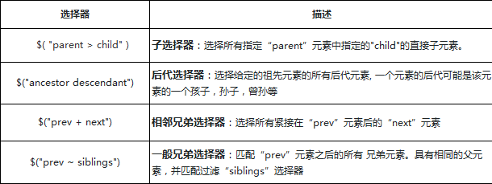
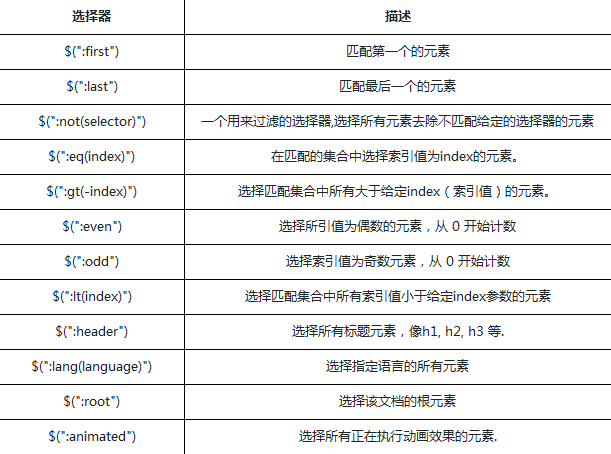
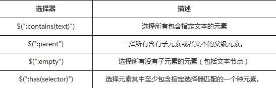
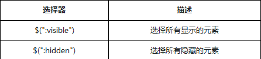
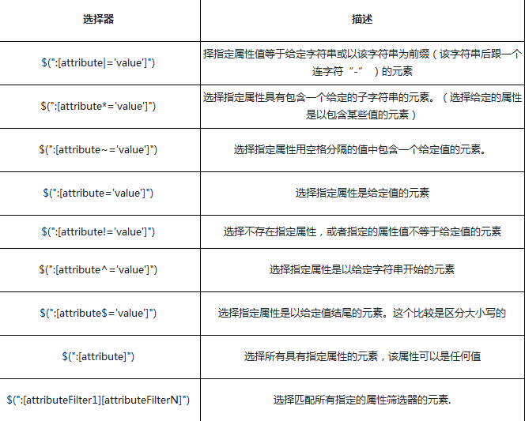
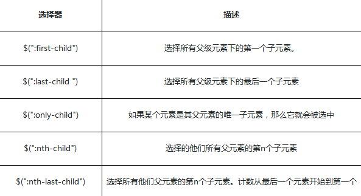
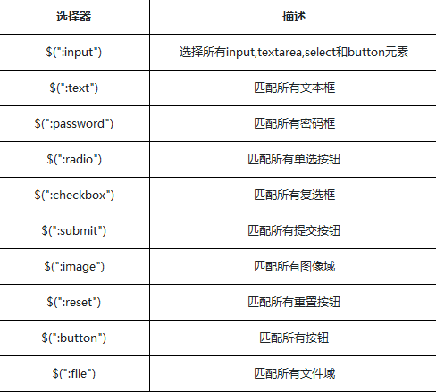
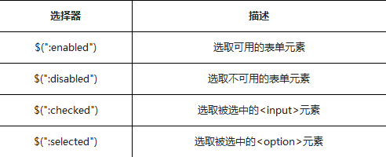

.attr()与.removeAttr()
jQuery中用attr()方法来获取和设置元素属性,attr是attribute（属性）的缩写，在jQuery DOM操作中会经常用到attr()
attr()有4个表达式
attr(传入属性名)：获取属性的值
attr(属性名, 属性值)：设置属性的值
attr(属性名,函数值)：设置属性的函数值
attr(attributes)：给指定元素设置多个属性值，即：{属性名一: “属性值一” , 属性名二: “属性值二” , … … }
.removeAttr( attributeName ) : 为匹配的元素集合中的每个元素中移除一个属性（attribute）
html()及.text()
.html()方法
获取集合中第一个匹配元素的HTML内容 或 设置每一个匹配元素的html内容
.text()方法
得到匹配元素集合中每个元素的文本内容结合，包括他们的后代，或设置匹配元素集合中每个元素的文本内容为指定的文本内容。
.val()方法
jQuery中有一个.val()方法主要是用于处理表单元素的值
增加样式.addClass()
.addClass()方法不会替换一个样式类名。它只是简单的添加一个样式类名到元素上
删除样式.removeClass()
切换样式.toggleClass()
.toggleClass( )方法：在匹配的元素集合中的每个元素上添加或删除一个或多个样式类,取决于这个样式类是否存在或值切换属性。即：如果存在（不存在）就删除（添加）一个类
样式操作.css()
层级选择器

基本选择器

内容筛选选择器

可见性筛选选择器

属性筛选选择器

子元素筛选选择器

表单元素选择器

表单对象属性筛选选择器
